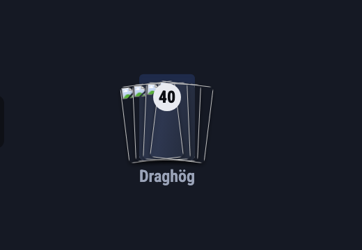
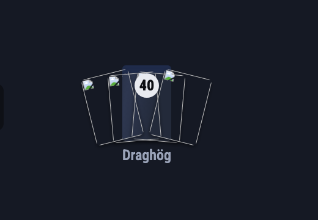
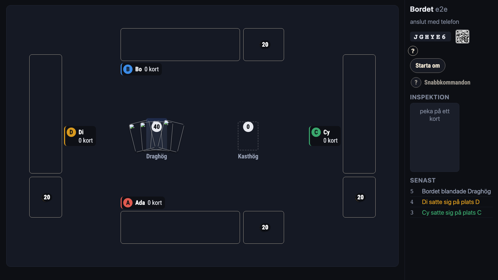
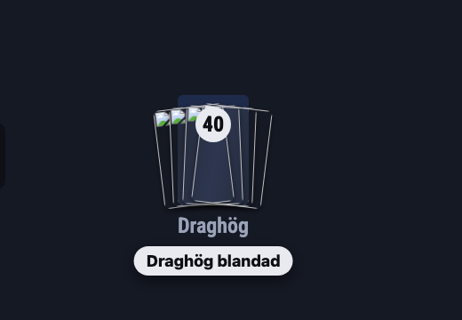
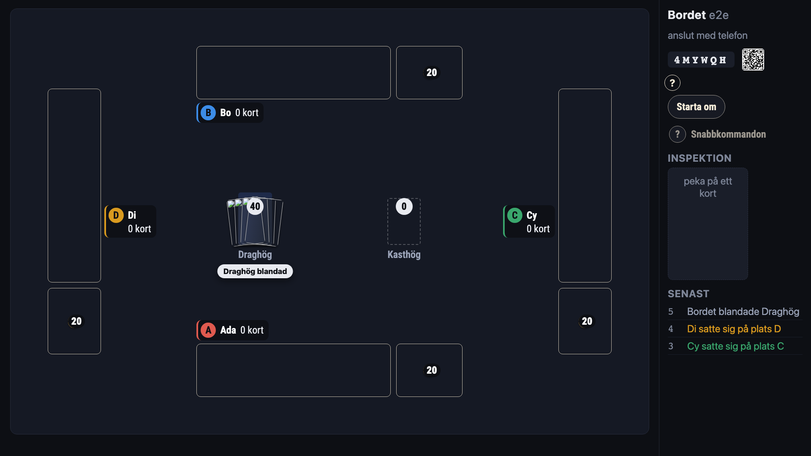
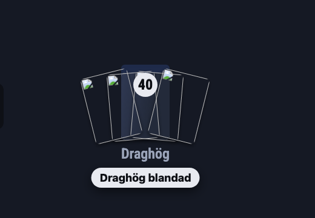
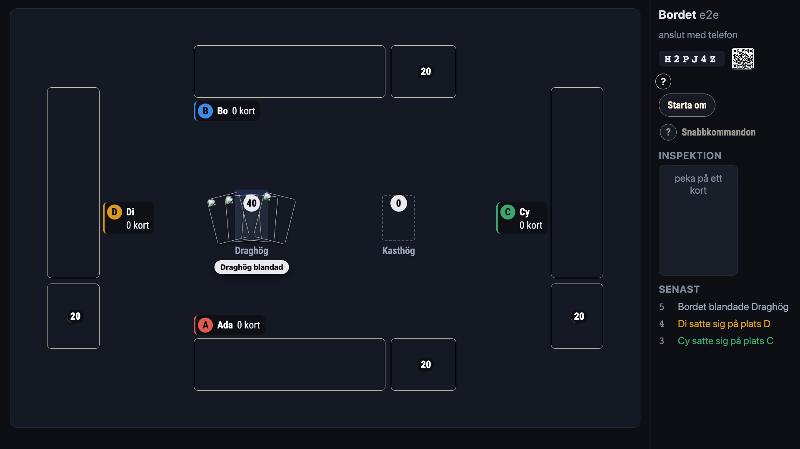

Vad TV:n visar när «Starta spelet» trycks (#718)
Den byggda appen vid 1920 × 1080, fyra platser, en start som blandar draghögen. Bilderna är fläktens topp, ungefär 200 ms efter trycket; vänster närbild, höger hela TV:n.
I dag
Fläkten (L35) spelas på TV:n, men vid 1920 är den några pixlar kortkant bakom en 80 px hög hög i en halv sekund — från soffan syns ingenting. (Fläktens kort ritar dessutom en trasig bild när baksidan inte är renderad än; det rättas oavsett variant.)

A — större och längre fläkt på TV:n
Samma rörelse, men på TV:n fläktas korten ut 2,6 gånger så långt och vrids dubbelt, på 1,2 s. Inga ord; rörelsen är beskedet.


B — fläkten som i dag, och en rad på filten
«Draghög blandad» står under högen i tre sekunder och tonar bort. Säger vad som hände, även för den som tittade bort under halvsekunden.


C — båda (rekommenderad)
Den större fläkten drar blicken dit, och raden säger vad den såg. Raden står kvar efter rörelsen, så den som tittar upp en sekund för sent ser också att starten tog.

